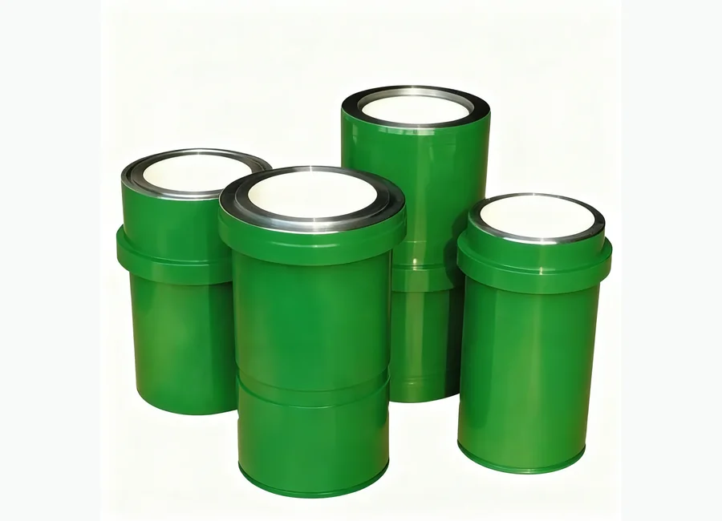

How to Request a Quotation
- Send part number or equipment model.
- Attach product photo or technical drawing if available.
- We will check compatibility and prepare quotation details.
Mud Pumps and Spare parts
Mud Pumps and Spare parts. UNBT Series Mud Pump Liner for oilfield equipment maintenance and replacement projects. Buyers can send part number, equipment model, product photo or technical drawing for quotation.

UNBT Series Mud Pump Liner for oilfield equipment maintenance and replacement projects. Buyers can send part number, equipment model, product photo or technical drawing for quotation.
Specification matching, export packaging, WhatsApp and email communication support for oilfield buyers.
Description
Images marked as description materials are placed here and are not used as the product card thumbnail.
No description image has been uploaded for this product yet.
Part Number Matching
Source material contained reference numbers, but the original table names were not reliable enough for direct publication. The numbers below are kept for matching and quotation confirmation.
Send OEM part number, pump model, rig model, product photo or drawing. We support part number matching, drawing matching and sample matching for drilling rig, mud pump, drawworks, hydraulic and wellhead equipment components.
| Part Name / Component | Reference No. / Model Code | Applicable Equipment | Description / Remark |
|---|---|---|---|
| UNBT Series Mud Pump Liner component | 96074.53.481 | Mud Pumps and Spare parts | Reference number retained from source material. Confirm against equipment model, product photo or technical drawing before quotation. |
| UNBT Series Mud Pump Liner component | oilfield spare part (spare spare part 180) | Mud Pumps and Spare parts | Reference number retained from source material. Confirm against equipment model, product photo or technical drawing before quotation. |
| UNBT Series Mud Pump Liner component | 66097.53.024–01 | Mud Pumps and Spare parts | Reference number retained from source material. Confirm against equipment model, product photo or technical drawing before quotation. |
| UNBT Series Mud Pump Liner component | 96074.53.482 | Mud Pumps and Spare parts | Reference number retained from source material. Confirm against equipment model, product photo or technical drawing before quotation. |
| UNBT Series Mud Pump Liner component | oilfield spare part (spare spare part 190) | Mud Pumps and Spare parts | Reference number retained from source material. Confirm against equipment model, product photo or technical drawing before quotation. |
| UNBT Series Mud Pump Liner component | 66097.53.024 | Mud Pumps and Spare parts | Reference number retained from source material. Confirm against equipment model, product photo or technical drawing before quotation. |
| UNBT Series Mud Pump Liner component | spare spare part 32part 20 spare spare part 152-74 | Mud Pumps and Spare parts | Reference number retained from source material. Confirm against equipment model, product photo or technical drawing before quotation. |
| UNBT Series Mud Pump Liner component | 40820000310 | Mud Pumps and Spare parts | Reference number retained from source material. Confirm against equipment model, product photo or technical drawing before quotation. |
| UNBT Series Mud Pump Liner component | 96037.53.193 | Mud Pumps and Spare parts | Reference number retained from source material. Confirm against equipment model, product photo or technical drawing before quotation. |
| UNBT Series Mud Pump Liner component | 96074.53.484 | Mud Pumps and Spare parts | Reference number retained from source material. Confirm against equipment model, product photo or technical drawing before quotation. |
| UNBT Series Mud Pump Liner component | 66097.53.139 | Mud Pumps and Spare parts | Reference number retained from source material. Confirm against equipment model, product photo or technical drawing before quotation. |
| UNBT Series Mud Pump Liner component | 96074.53.485 | Mud Pumps and Spare parts | Reference number retained from source material. Confirm against equipment model, product photo or technical drawing before quotation. |
| UNBT Series Mud Pump Liner component | 66097.53.061 | Mud Pumps and Spare parts | Reference number retained from source material. Confirm against equipment model, product photo or technical drawing before quotation. |
| UNBT Series Mud Pump Liner component | spare spare part 32 spare spare part 146-75 | Mud Pumps and Spare parts | Reference number retained from source material. Confirm against equipment model, product photo or technical drawing before quotation. |
| UNBT Series Mud Pump Liner component | 40890000320 | Mud Pumps and Spare parts | Reference number retained from source material. Confirm against equipment model, product photo or technical drawing before quotation. |
| UNBT Series Mud Pump Liner component | spare spare part 24 | Mud Pumps and Spare parts | Reference number retained from source material. Confirm against equipment model, product photo or technical drawing before quotation. |
| UNBT Series Mud Pump Liner component | 66097.53.062 | Mud Pumps and Spare parts | Reference number retained from source material. Confirm against equipment model, product photo or technical drawing before quotation. |
| UNBT Series Mud Pump Liner component | spare spare part 19 | Mud Pumps and Spare parts | Reference number retained from source material. Confirm against equipment model, product photo or technical drawing before quotation. |
| UNBT Series Mud Pump Liner component | 05-100 spare spare part 3722-81 | Mud Pumps and Spare parts | Reference number retained from source material. Confirm against equipment model, product photo or technical drawing before quotation. |
| UNBT Series Mud Pump Liner component | 4691179863 | Mud Pumps and Spare parts | Reference number retained from source material. Confirm against equipment model, product photo or technical drawing before quotation. |
| UNBT Series Mud Pump Liner component | 14088.53.020 packing | Mud Pumps and Spare parts | Reference number retained from source material. Confirm against equipment model, product photo or technical drawing before quotation. |
| UNBT Series Mud Pump Liner component | 66086.53.093 | Mud Pumps and Spare parts | Reference number retained from source material. Confirm against equipment model, product photo or technical drawing before quotation. |
| UNBT Series Mud Pump Liner component | oilfield spare spare part 50-6 | Mud Pumps and Spare parts | Reference number retained from source material. Confirm against equipment model, product photo or technical drawing before quotation. |
| UNBT Series Mud Pump Liner component | 14036.53.945-1 packing | Mud Pumps and Spare parts | Reference number retained from source material. Confirm against equipment model, product photo or technical drawing before quotation. |
| UNBT Series Mud Pump Liner component | 66087.53.176 | Mud Pumps and Spare parts | Reference number retained from source material. Confirm against equipment model, product photo or technical drawing before quotation. |
| UNBT Series Mud Pump Liner component | 14077.53.030 packing | Mud Pumps and Spare parts | Reference number retained from source material. Confirm against equipment model, product photo or technical drawing before quotation. |
| UNBT Series Mud Pump Liner component | 66087.53.177 | Mud Pumps and Spare parts | Reference number retained from source material. Confirm against equipment model, product photo or technical drawing before quotation. |
| UNBT Series Mud Pump Liner component | 14077.53.030-01 packing | Mud Pumps and Spare parts | Reference number retained from source material. Confirm against equipment model, product photo or technical drawing before quotation. |
| UNBT Series Mud Pump Liner component | 66087.53.178 | Mud Pumps and Spare parts | Reference number retained from source material. Confirm against equipment model, product photo or technical drawing before quotation. |
| UNBT Series Mud Pump Liner component | 14036.53.948 packing | Mud Pumps and Spare parts | Reference number retained from source material. Confirm against equipment model, product photo or technical drawing before quotation. |
| UNBT Series Mud Pump Liner component | spare part G1/4–B 019 spare spare part 153-86 | Mud Pumps and Spare parts | Reference number retained from source material. Confirm against equipment model, product photo or technical drawing before quotation. |
| UNBT Series Mud Pump Liner component | 409811.801–00.013 | Mud Pumps and Spare parts | Reference number retained from source material. Confirm against equipment model, product photo or technical drawing before quotation. |
| UNBT Series Mud Pump Liner component | 14010.53.910 packing | Mud Pumps and Spare parts | Reference number retained from source material. Confirm against equipment model, product photo or technical drawing before quotation. |
| UNBT Series Mud Pump Liner component | 96004.53.125 packing | Mud Pumps and Spare parts | Reference number retained from source material. Confirm against equipment model, product photo or technical drawing before quotation. |
| UNBT Series Mud Pump Liner component | 14036.53.950 packing | Mud Pumps and Spare parts | Reference number retained from source material. Confirm against equipment model, product photo or technical drawing before quotation. |
| UNBT Series Mud Pump Liner component | 96090.53.910 part. | Mud Pumps and Spare parts | Reference number retained from source material. Confirm against equipment model, product photo or technical drawing before quotation. |
| UNBT Series Mud Pump Liner component | 14036.53.944 packing | Mud Pumps and Spare parts | Reference number retained from source material. Confirm against equipment model, product photo or technical drawing before quotation. |
| UNBT Series Mud Pump Liner component | 96033.53.030 part. | Mud Pumps and Spare parts | Reference number retained from source material. Confirm against equipment model, product photo or technical drawing before quotation. |
| UNBT Series Mud Pump Liner component | 14010.53.852 packing | Mud Pumps and Spare parts | Reference number retained from source material. Confirm against equipment model, product photo or technical drawing before quotation. |
| UNBT Series Mud Pump Liner component | 96033.53.655 part. | Mud Pumps and Spare parts | Reference number retained from source material. Confirm against equipment model, product photo or technical drawing before quotation. |
| UNBT Series Mud Pump Liner component | 14077.53.005 packing | Mud Pumps and Spare parts | Reference number retained from source material. Confirm against equipment model, product photo or technical drawing before quotation. |
| UNBT Series Mud Pump Liner component | 66097.53.084 part. | Mud Pumps and Spare parts | Reference number retained from source material. Confirm against equipment model, product photo or technical drawing before quotation. |
| UNBT Series Mud Pump Liner component | 14036.53.940 packing | Mud Pumps and Spare parts | Reference number retained from source material. Confirm against equipment model, product photo or technical drawing before quotation. |
| UNBT Series Mud Pump Liner component | 96033.53.005 part. | Mud Pumps and Spare parts | Reference number retained from source material. Confirm against equipment model, product photo or technical drawing before quotation. |
| UNBT Series Mud Pump Liner component | 14077.53.009 packing | Mud Pumps and Spare parts | Reference number retained from source material. Confirm against equipment model, product photo or technical drawing before quotation. |
| UNBT Series Mud Pump Liner component | 96033.53.009 part. | Mud Pumps and Spare parts | Reference number retained from source material. Confirm against equipment model, product photo or technical drawing before quotation. |
| UNBT Series Mud Pump Liner component | 14006.53.125 packing | Mud Pumps and Spare parts | Reference number retained from source material. Confirm against equipment model, product photo or technical drawing before quotation. |
| UNBT Series Mud Pump Liner component | 66097.53.071 part. | Mud Pumps and Spare parts | Reference number retained from source material. Confirm against equipment model, product photo or technical drawing before quotation. |
| UNBT Series Mud Pump Liner component | 14010.53.835-03 packing | Mud Pumps and Spare parts | Reference number retained from source material. Confirm against equipment model, product photo or technical drawing before quotation. |
| UNBT Series Mud Pump Liner component | 66097.53.073 part. | Mud Pumps and Spare parts | Reference number retained from source material. Confirm against equipment model, product photo or technical drawing before quotation. |
| UNBT Series Mud Pump Liner component | 14010.53.880 packing | Mud Pumps and Spare parts | Reference number retained from source material. Confirm against equipment model, product photo or technical drawing before quotation. |
| UNBT Series Mud Pump Liner component | spare spare part 50 – 6 | Mud Pumps and Spare parts | Reference number retained from source material. Confirm against equipment model, product photo or technical drawing before quotation. |
| UNBT Series Mud Pump Liner component | 96074.53.945 – 1 part. | Mud Pumps and Spare parts | Reference number retained from source material. Confirm against equipment model, product photo or technical drawing before quotation. |
| UNBT Series Mud Pump Liner component | 14036.53.032 packing | Mud Pumps and Spare parts | Reference number retained from source material. Confirm against equipment model, product photo or technical drawing before quotation. |
| UNBT Series Mud Pump Liner component | 66097.53.065 part. | Mud Pumps and Spare parts | Reference number retained from source material. Confirm against equipment model, product photo or technical drawing before quotation. |
| UNBT Series Mud Pump Liner component | part (spare spare part 180) | Mud Pumps and Spare parts | Reference number retained from source material. Confirm against equipment model, product photo or technical drawing before quotation. |
| UNBT Series Mud Pump Liner component | 14036.53.230 packing | Mud Pumps and Spare parts | Reference number retained from source material. Confirm against equipment model, product photo or technical drawing before quotation. |
| UNBT Series Mud Pump Liner component | spare spare part 01.06.01.000 part. | Mud Pumps and Spare parts | Reference number retained from source material. Confirm against equipment model, product photo or technical drawing before quotation. |
| UNBT Series Mud Pump Liner component | part (spare spare part 170) | Mud Pumps and Spare parts | Reference number retained from source material. Confirm against equipment model, product photo or technical drawing before quotation. |
| UNBT Series Mud Pump Liner component | 14036.53.230-01 packing | Mud Pumps and Spare parts | Reference number retained from source material. Confirm against equipment model, product photo or technical drawing before quotation. |
| UNBT Series Mud Pump Liner component | spare spare part 01.06.02.000 part. | Mud Pumps and Spare parts | Reference number retained from source material. Confirm against equipment model, product photo or technical drawing before quotation. |
| UNBT Series Mud Pump Liner component | 4066.46.16 | Mud Pumps and Spare parts | Reference number retained from source material. Confirm against equipment model, product photo or technical drawing before quotation. |
| UNBT Series Mud Pump Liner component | 66097.53.147 part. | Mud Pumps and Spare parts | Reference number retained from source material. Confirm against equipment model, product photo or technical drawing before quotation. |
| UNBT Series Mud Pump Liner component | 14006.53.061-1 | Mud Pumps and Spare parts | Reference number retained from source material. Confirm against equipment model, product photo or technical drawing before quotation. |
| UNBT Series Mud Pump Liner component | spare spare part 42×3 | Mud Pumps and Spare parts | Reference number retained from source material. Confirm against equipment model, product photo or technical drawing before quotation. |
| UNBT Series Mud Pump Liner component | 66060.53.023 | Mud Pumps and Spare parts | Reference number retained from source material. Confirm against equipment model, product photo or technical drawing before quotation. |
| UNBT Series Mud Pump Liner component | 14036.53.939 | Mud Pumps and Spare parts | Reference number retained from source material. Confirm against equipment model, product photo or technical drawing before quotation. |
| UNBT Series Mud Pump Liner component | 66060.53.028 part. | Mud Pumps and Spare parts | Reference number retained from source material. Confirm against equipment model, product photo or technical drawing before quotation. |
| UNBT Series Mud Pump Liner component | 14010.53.849 | Mud Pumps and Spare parts | Reference number retained from source material. Confirm against equipment model, product photo or technical drawing before quotation. |
| UNBT Series Mud Pump Liner component | 66097.53.100 part. | Mud Pumps and Spare parts | Reference number retained from source material. Confirm against equipment model, product photo or technical drawing before quotation. |
| UNBT Series Mud Pump Liner component | spare spare part 50 | Mud Pumps and Spare parts | Reference number retained from source material. Confirm against equipment model, product photo or technical drawing before quotation. |
| UNBT Series Mud Pump Liner component | spare spare part 130-74 | Mud Pumps and Spare parts | Reference number retained from source material. Confirm against equipment model, product photo or technical drawing before quotation. |
| UNBT Series Mud Pump Liner component | 96081.53.060 part. | Mud Pumps and Spare parts | Reference number retained from source material. Confirm against equipment model, product photo or technical drawing before quotation. |
| UNBT Series Mud Pump Liner component | 14036.53.253 | Mud Pumps and Spare parts | Reference number retained from source material. Confirm against equipment model, product photo or technical drawing before quotation. |
| UNBT Series Mud Pump Liner component | spare spare part 180 | Mud Pumps and Spare parts | Reference number retained from source material. Confirm against equipment model, product photo or technical drawing before quotation. |
| UNBT Series Mud Pump Liner component | 96074.53.230 part. | Mud Pumps and Spare parts | Reference number retained from source material. Confirm against equipment model, product photo or technical drawing before quotation. |
| UNBT Series Mud Pump Liner component | 14010.53.490 | Mud Pumps and Spare parts | Reference number retained from source material. Confirm against equipment model, product photo or technical drawing before quotation. |
| UNBT Series Mud Pump Liner component | spare spare part 170 | Mud Pumps and Spare parts | Reference number retained from source material. Confirm against equipment model, product photo or technical drawing before quotation. |
| UNBT Series Mud Pump Liner component | 96074.53.230-01 part. | Mud Pumps and Spare parts | Reference number retained from source material. Confirm against equipment model, product photo or technical drawing before quotation. |
| UNBT Series Mud Pump Liner component | 14036.53.149 | Mud Pumps and Spare parts | Reference number retained from source material. Confirm against equipment model, product photo or technical drawing before quotation. |
| UNBT Series Mud Pump Liner component | spare spare part 160 | Mud Pumps and Spare parts | Reference number retained from source material. Confirm against equipment model, product photo or technical drawing before quotation. |
| UNBT Series Mud Pump Liner component | 96074.53.230-02 part. | Mud Pumps and Spare parts | Reference number retained from source material. Confirm against equipment model, product photo or technical drawing before quotation. |
| UNBT Series Mud Pump Liner component | 14036.53.154 | Mud Pumps and Spare parts | Reference number retained from source material. Confirm against equipment model, product photo or technical drawing before quotation. |
| UNBT Series Mud Pump Liner component | spare spare part 150 | Mud Pumps and Spare parts | Reference number retained from source material. Confirm against equipment model, product photo or technical drawing before quotation. |
| UNBT Series Mud Pump Liner component | 96074.53.230-03 part. | Mud Pumps and Spare parts | Reference number retained from source material. Confirm against equipment model, product photo or technical drawing before quotation. |
| UNBT Series Mud Pump Liner component | 14010.53.497-1 | Mud Pumps and Spare parts | Reference number retained from source material. Confirm against equipment model, product photo or technical drawing before quotation. |
| UNBT Series Mud Pump Liner component | spare spare part 140 | Mud Pumps and Spare parts | Reference number retained from source material. Confirm against equipment model, product photo or technical drawing before quotation. |
| UNBT Series Mud Pump Liner component | 96074.53.230-04 part | Mud Pumps and Spare parts | Reference number retained from source material. Confirm against equipment model, product photo or technical drawing before quotation. |
| UNBT Series Mud Pump Liner component | 4045.53.855 | Mud Pumps and Spare parts | Reference number retained from source material. Confirm against equipment model, product photo or technical drawing before quotation. |
| UNBT Series Mud Pump Liner component | spare spare part 190 | Mud Pumps and Spare parts | Reference number retained from source material. Confirm against equipment model, product photo or technical drawing before quotation. |
| UNBT Series Mud Pump Liner component | 96074.53.230-07 part. | Mud Pumps and Spare parts | Reference number retained from source material. Confirm against equipment model, product photo or technical drawing before quotation. |
| UNBT Series Mud Pump Liner component | 14036.53.243 | Mud Pumps and Spare parts | Reference number retained from source material. Confirm against equipment model, product photo or technical drawing before quotation. |
| UNBT Series Mud Pump Liner component | oilfield spare part (spare spare part 180). | Mud Pumps and Spare parts | Reference number retained from source material. Confirm against equipment model, product photo or technical drawing before quotation. |
| UNBT Series Mud Pump Liner component | 6606.53.034 – 01 packing. | Mud Pumps and Spare parts | Reference number retained from source material. Confirm against equipment model, product photo or technical drawing before quotation. |
| UNBT Series Mud Pump Liner component | 14036.53.982-1 | Mud Pumps and Spare parts | Reference number retained from source material. Confirm against equipment model, product photo or technical drawing before quotation. |
| UNBT Series Mud Pump Liner component | oilfield spare part (spare spare part 190). | Mud Pumps and Spare parts | Reference number retained from source material. Confirm against equipment model, product photo or technical drawing before quotation. |
| UNBT Series Mud Pump Liner component | 6606.53.034 part. | Mud Pumps and Spare parts | Reference number retained from source material. Confirm against equipment model, product photo or technical drawing before quotation. |
| UNBT Series Mud Pump Liner component | 14036.53.983 | Mud Pumps and Spare parts | Reference number retained from source material. Confirm against equipment model, product photo or technical drawing before quotation. |
| UNBT Series Mud Pump Liner component | oilfield spare part (spare spare part 170). | Mud Pumps and Spare parts | Reference number retained from source material. Confirm against equipment model, product photo or technical drawing before quotation. |
| UNBT Series Mud Pump Liner component | 6606.53.034 – 02 part. | Mud Pumps and Spare parts | Reference number retained from source material. Confirm against equipment model, product photo or technical drawing before quotation. |
| UNBT Series Mud Pump Liner component | 14006.53.811-1 | Mud Pumps and Spare parts | Reference number retained from source material. Confirm against equipment model, product photo or technical drawing before quotation. |
| UNBT Series Mud Pump Liner component | oilfield spare part (spare spare part 160). | Mud Pumps and Spare parts | Reference number retained from source material. Confirm against equipment model, product photo or technical drawing before quotation. |
| UNBT Series Mud Pump Liner component | 6606.53.034 – 03 part. | Mud Pumps and Spare parts | Reference number retained from source material. Confirm against equipment model, product photo or technical drawing before quotation. |
| UNBT Series Mud Pump Liner component | 14036.53.943 | Mud Pumps and Spare parts | Reference number retained from source material. Confirm against equipment model, product photo or technical drawing before quotation. |
| UNBT Series Mud Pump Liner component | oilfield spare part (spare spare part 150). | Mud Pumps and Spare parts | Reference number retained from source material. Confirm against equipment model, product photo or technical drawing before quotation. |
| UNBT Series Mud Pump Liner component | 6606.53.034 – 04 part. | Mud Pumps and Spare parts | Reference number retained from source material. Confirm against equipment model, product photo or technical drawing before quotation. |
| UNBT Series Mud Pump Liner component | oilfield spare part (oilfield spare spare part 160) | Mud Pumps and Spare parts | Reference number retained from source material. Confirm against equipment model, product photo or technical drawing before quotation. |
| UNBT Series Mud Pump Liner component | 14036.53.197-02 | Mud Pumps and Spare parts | Reference number retained from source material. Confirm against equipment model, product photo or technical drawing before quotation. |
| UNBT Series Mud Pump Liner component | oilfield spare part (spare spare part 140). | Mud Pumps and Spare parts | Reference number retained from source material. Confirm against equipment model, product photo or technical drawing before quotation. |
| UNBT Series Mud Pump Liner component | 6606.53.034 – 05 part. | Mud Pumps and Spare parts | Reference number retained from source material. Confirm against equipment model, product photo or technical drawing before quotation. |
| UNBT Series Mud Pump Liner component | oilfield spare part (oilfield spare spare part 180) | Mud Pumps and Spare parts | Reference number retained from source material. Confirm against equipment model, product photo or technical drawing before quotation. |
| UNBT Series Mud Pump Liner component | 14036.53.197-04 | Mud Pumps and Spare parts | Reference number retained from source material. Confirm against equipment model, product photo or technical drawing before quotation. |
| UNBT Series Mud Pump Liner component | 6065.53.855 | Mud Pumps and Spare parts | Reference number retained from source material. Confirm against equipment model, product photo or technical drawing before quotation. |
| UNBT Series Mud Pump Liner component | part (oilfield spare spare part 180) | Mud Pumps and Spare parts | Reference number retained from source material. Confirm against equipment model, product photo or technical drawing before quotation. |
| UNBT Series Mud Pump Liner component | 14036.53.246 | Mud Pumps and Spare parts | Reference number retained from source material. Confirm against equipment model, product photo or technical drawing before quotation. |
| UNBT Series Mud Pump Liner component | 6065.53.856-1 | Mud Pumps and Spare parts | Reference number retained from source material. Confirm against equipment model, product photo or technical drawing before quotation. |
| UNBT Series Mud Pump Liner component | part (oilfield spare spare part 160) | Mud Pumps and Spare parts | Reference number retained from source material. Confirm against equipment model, product photo or technical drawing before quotation. |
| UNBT Series Mud Pump Liner component | 14036.53.246-02 | Mud Pumps and Spare parts | Reference number retained from source material. Confirm against equipment model, product photo or technical drawing before quotation. |
| UNBT Series Mud Pump Liner component | 6065.53.858-1 | Mud Pumps and Spare parts | Reference number retained from source material. Confirm against equipment model, product photo or technical drawing before quotation. |
| UNBT Series Mud Pump Liner component | 14036.53.104 | Mud Pumps and Spare parts | Reference number retained from source material. Confirm against equipment model, product photo or technical drawing before quotation. |
| UNBT Series Mud Pump Liner component | 6044.53.211 | Mud Pumps and Spare parts | Reference number retained from source material. Confirm against equipment model, product photo or technical drawing before quotation. |
| UNBT Series Mud Pump Liner component | 14010.53.464 | Mud Pumps and Spare parts | Reference number retained from source material. Confirm against equipment model, product photo or technical drawing before quotation. |
| UNBT Series Mud Pump Liner component | 96004.53.049 | Mud Pumps and Spare parts | Reference number retained from source material. Confirm against equipment model, product photo or technical drawing before quotation. |
| UNBT Series Mud Pump Liner component | 4092.53.305 | Mud Pumps and Spare parts | Reference number retained from source material. Confirm against equipment model, product photo or technical drawing before quotation. |
| UNBT Series Mud Pump Liner component | 96004.53.124 | Mud Pumps and Spare parts | Reference number retained from source material. Confirm against equipment model, product photo or technical drawing before quotation. |
| UNBT Series Mud Pump Liner component | 14006.53.126 | Mud Pumps and Spare parts | Reference number retained from source material. Confirm against equipment model, product photo or technical drawing before quotation. |
| UNBT Series Mud Pump Liner component | 66097.53.122 | Mud Pumps and Spare parts | Reference number retained from source material. Confirm against equipment model, product photo or technical drawing before quotation. |
| UNBT Series Mud Pump Liner component | 14006.53.049 | Mud Pumps and Spare parts | Reference number retained from source material. Confirm against equipment model, product photo or technical drawing before quotation. |
| UNBT Series Mud Pump Liner component | 96004.53.599 | Mud Pumps and Spare parts | Reference number retained from source material. Confirm against equipment model, product photo or technical drawing before quotation. |
| UNBT Series Mud Pump Liner component | 14006.53.124 | Mud Pumps and Spare parts | Reference number retained from source material. Confirm against equipment model, product photo or technical drawing before quotation. |
| UNBT Series Mud Pump Liner component | 96004.53.811 – 1 | Mud Pumps and Spare parts | Reference number retained from source material. Confirm against equipment model, product photo or technical drawing before quotation. |
| UNBT Series Mud Pump Liner component | spare spare part 20 | Mud Pumps and Spare parts | Reference number retained from source material. Confirm against equipment model, product photo or technical drawing before quotation. |
| UNBT Series Mud Pump Liner component | 14010.53.847 | Mud Pumps and Spare parts | Reference number retained from source material. Confirm against equipment model, product photo or technical drawing before quotation. |
| UNBT Series Mud Pump Liner component | 96004.55.177 | Mud Pumps and Spare parts | Reference number retained from source material. Confirm against equipment model, product photo or technical drawing before quotation. |
| UNBT Series Mud Pump Liner component | 14036.53.248 | Mud Pumps and Spare parts | Reference number retained from source material. Confirm against equipment model, product photo or technical drawing before quotation. |
| UNBT Series Mud Pump Liner component | 66097.53.125 | Mud Pumps and Spare parts | Reference number retained from source material. Confirm against equipment model, product photo or technical drawing before quotation. |
| UNBT Series Mud Pump Liner component | 96074.53.428 | Mud Pumps and Spare parts | Reference number retained from source material. Confirm against equipment model, product photo or technical drawing before quotation. |
| UNBT Series Mud Pump Liner component | 4066.53.17 | Mud Pumps and Spare parts | Reference number retained from source material. Confirm against equipment model, product photo or technical drawing before quotation. |
| UNBT Series Mud Pump Liner component | 96090.53.490 | Mud Pumps and Spare parts | Reference number retained from source material. Confirm against equipment model, product photo or technical drawing before quotation. |
| UNBT Series Mud Pump Liner component | 14006.53.861-3 | Mud Pumps and Spare parts | Reference number retained from source material. Confirm against equipment model, product photo or technical drawing before quotation. |
| UNBT Series Mud Pump Liner component | 96090.53.847 | Mud Pumps and Spare parts | Reference number retained from source material. Confirm against equipment model, product photo or technical drawing before quotation. |
| UNBT Series Mud Pump Liner component | 14073.53.131 | Mud Pumps and Spare parts | Reference number retained from source material. Confirm against equipment model, product photo or technical drawing before quotation. |
| UNBT Series Mud Pump Liner component | 96074.53.149 | Mud Pumps and Spare parts | Reference number retained from source material. Confirm against equipment model, product photo or technical drawing before quotation. |
| UNBT Series Mud Pump Liner component | 14077.53.047 | Mud Pumps and Spare parts | Reference number retained from source material. Confirm against equipment model, product photo or technical drawing before quotation. |
| UNBT Series Mud Pump Liner component | 96074.53.154 | Mud Pumps and Spare parts | Reference number retained from source material. Confirm against equipment model, product photo or technical drawing before quotation. |
| UNBT Series Mud Pump Liner component | 14015.55.547-1 | Mud Pumps and Spare parts | Reference number retained from source material. Confirm against equipment model, product photo or technical drawing before quotation. |
| UNBT Series Mud Pump Liner component | 66097.53.124 | Mud Pumps and Spare parts | Reference number retained from source material. Confirm against equipment model, product photo or technical drawing before quotation. |
| UNBT Series Mud Pump Liner component | 14036.53.108 | Mud Pumps and Spare parts | Reference number retained from source material. Confirm against equipment model, product photo or technical drawing before quotation. |
| UNBT Series Mud Pump Liner component | 66097.53.069 | Mud Pumps and Spare parts | Reference number retained from source material. Confirm against equipment model, product photo or technical drawing before quotation. |
| UNBT Series Mud Pump Liner component | 66097.53.079 | Mud Pumps and Spare parts | Reference number retained from source material. Confirm against equipment model, product photo or technical drawing before quotation. |
| UNBT Series Mud Pump Liner component | 66097.53.078 | Mud Pumps and Spare parts | Reference number retained from source material. Confirm against equipment model, product photo or technical drawing before quotation. |
| UNBT Series Mud Pump Liner component | 14036.53.131-2 packing | Mud Pumps and Spare parts | Reference number retained from source material. Confirm against equipment model, product photo or technical drawing before quotation. |
| UNBT Series Mud Pump Liner component | 66060.53.021 | Mud Pumps and Spare parts | Reference number retained from source material. Confirm against equipment model, product photo or technical drawing before quotation. |
| UNBT Series Mud Pump Liner component | 66097.53.080 | Mud Pumps and Spare parts | Reference number retained from source material. Confirm against equipment model, product photo or technical drawing before quotation. |
| UNBT Series Mud Pump Liner component | oilfield spare part-1180 D170 spare spare part 44040.53.034-02 packing | Mud Pumps and Spare parts | Reference number retained from source material. Confirm against equipment model, product photo or technical drawing before quotation. |
| UNBT Series Mud Pump Liner component | 44040.53.034-02 | Mud Pumps and Spare parts | Reference number retained from source material. Confirm against equipment model, product photo or technical drawing before quotation. |
| UNBT Series Mud Pump Liner component | spare spare part 96074.53.246-06 part-1180 | Mud Pumps and Spare parts | Reference number retained from source material. Confirm against equipment model, product photo or technical drawing before quotation. |
| UNBT Series Mud Pump Liner component | 96074.53.246-06 | Mud Pumps and Spare parts | Reference number retained from source material. Confirm against equipment model, product photo or technical drawing before quotation. |
| UNBT Series Mud Pump Liner component | spare spare part 96004.53.833-2 part-1180 | Mud Pumps and Spare parts | Reference number retained from source material. Confirm against equipment model, product photo or technical drawing before quotation. |
| UNBT Series Mud Pump Liner component | 96004.53.833-2 | Mud Pumps and Spare parts | Reference number retained from source material. Confirm against equipment model, product photo or technical drawing before quotation. |
| UNBT Series Mud Pump Liner component | spare spare part 96033.53.005 packing oilfield spare part-1180 | Mud Pumps and Spare parts | Reference number retained from source material. Confirm against equipment model, product photo or technical drawing before quotation. |
| UNBT Series Mud Pump Liner component | 96033.53.005 packing | Mud Pumps and Spare parts | Reference number retained from source material. Confirm against equipment model, product photo or technical drawing before quotation. |
| UNBT Series Mud Pump Liner component | spare spare part 96004.53.834-2 oilfield spare part | Mud Pumps and Spare parts | Reference number retained from source material. Confirm against equipment model, product photo or technical drawing before quotation. |
| UNBT Series Mud Pump Liner component | 96004.53.834-2 | Mud Pumps and Spare parts | Reference number retained from source material. Confirm against equipment model, product photo or technical drawing before quotation. |
| UNBT Series Mud Pump Liner component | spare spare part 96004.53.125 oilfield spare part | Mud Pumps and Spare parts | Reference number retained from source material. Confirm against equipment model, product photo or technical drawing before quotation. |
| UNBT Series Mud Pump Liner component | 96004.53.125 | Mud Pumps and Spare parts | Reference number retained from source material. Confirm against equipment model, product photo or technical drawing before quotation. |
| UNBT Series Mud Pump Liner component | oilfield spare part-1180 D140 spare spare part 96074.53.230-06 | Mud Pumps and Spare parts | Reference number retained from source material. Confirm against equipment model, product photo or technical drawing before quotation. |
| UNBT Series Mud Pump Liner component | 96074.53.230-06 | Mud Pumps and Spare parts | Reference number retained from source material. Confirm against equipment model, product photo or technical drawing before quotation. |
| UNBT Series Mud Pump Liner component | oilfield spare spare part 14036.53.108 | Mud Pumps and Spare parts | Reference number retained from source material. Confirm against equipment model, product photo or technical drawing before quotation. |
| UNBT Series Mud Pump Liner component | oilfield spare part-1180 D170 spare spare part 96074.53.230-03 | Mud Pumps and Spare parts | Reference number retained from source material. Confirm against equipment model, product photo or technical drawing before quotation. |
| UNBT Series Mud Pump Liner component | 96074.53.230-03 | Mud Pumps and Spare parts | Reference number retained from source material. Confirm against equipment model, product photo or technical drawing before quotation. |
| UNBT Series Mud Pump Liner component | spare spare part 055-060-30-2-2 oilfield spare part | Mud Pumps and Spare parts | Reference number retained from source material. Confirm against equipment model, product photo or technical drawing before quotation. |
| UNBT Series Mud Pump Liner component | 055-060-30-2-2 | Mud Pumps and Spare parts | Reference number retained from source material. Confirm against equipment model, product photo or technical drawing before quotation. |
| UNBT Series Mud Pump Liner component | oilfield spare spare part 66060.53.022 part-1180 | Mud Pumps and Spare parts | Reference number retained from source material. Confirm against equipment model, product photo or technical drawing before quotation. |
| UNBT Series Mud Pump Liner component | 66060.53.022 | Mud Pumps and Spare parts | Reference number retained from source material. Confirm against equipment model, product photo or technical drawing before quotation. |
| UNBT Series Mud Pump Liner component | spare spare part 50-30928/630 packing | Mud Pumps and Spare parts | Reference number retained from source material. Confirm against equipment model, product photo or technical drawing before quotation. |
| UNBT Series Mud Pump Liner component | oilfield spare spare part 66060.53.024-2 (170) oilfield spare part-1180 | Mud Pumps and Spare parts | Reference number retained from source material. Confirm against equipment model, product photo or technical drawing before quotation. |
| UNBT Series Mud Pump Liner component | 66060.53.024-2 | Mud Pumps and Spare parts | Reference number retained from source material. Confirm against equipment model, product photo or technical drawing before quotation. |
| UNBT Series Mud Pump Liner component | spare spare part 3003264 | Mud Pumps and Spare parts | Reference number retained from source material. Confirm against equipment model, product photo or technical drawing before quotation. |
| UNBT Series Mud Pump Liner component | 3003264 spare spare part 5721 | Mud Pumps and Spare parts | Reference number retained from source material. Confirm against equipment model, product photo or technical drawing before quotation. |
| UNBT Series Mud Pump Liner component | oilfield spare part-950 44040.53.024-05 | Mud Pumps and Spare parts | Reference number retained from source material. Confirm against equipment model, product photo or technical drawing before quotation. |
| UNBT Series Mud Pump Liner component | 44040.53.024-05 | Mud Pumps and Spare parts | Reference number retained from source material. Confirm against equipment model, product photo or technical drawing before quotation. |
| UNBT Series Mud Pump Liner component | spare spare part 4262730 part | Mud Pumps and Spare parts | Reference number retained from source material. Confirm against equipment model, product photo or technical drawing before quotation. |
| UNBT Series Mud Pump Liner component | 4262730 spare spare part 23526 | Mud Pumps and Spare parts | Reference number retained from source material. Confirm against equipment model, product photo or technical drawing before quotation. |
| UNBT Series Mud Pump Liner component | oilfield spare spare part 96004.53.049 | Mud Pumps and Spare parts | Reference number retained from source material. Confirm against equipment model, product photo or technical drawing before quotation. |
| UNBT Series Mud Pump Liner component | oilfield spare spare part 44013.53.225-02 oilfield spare part-950 | Mud Pumps and Spare parts | Reference number retained from source material. Confirm against equipment model, product photo or technical drawing before quotation. |
| UNBT Series Mud Pump Liner component | 44013.53.225-02 | Mud Pumps and Spare parts | Reference number retained from source material. Confirm against equipment model, product photo or technical drawing before quotation. |
| UNBT Series Mud Pump Liner component | oilfield spare spare part 09-1272.000 | Mud Pumps and Spare parts | Reference number retained from source material. Confirm against equipment model, product photo or technical drawing before quotation. |
| UNBT Series Mud Pump Liner component | 09-1272.000 | Mud Pumps and Spare parts | Reference number retained from source material. Confirm against equipment model, product photo or technical drawing before quotation. |
| UNBT Series Mud Pump Liner component | oilfield spare spare part 96004.53.124 | Mud Pumps and Spare parts | Reference number retained from source material. Confirm against equipment model, product photo or technical drawing before quotation. |
| UNBT Series Mud Pump Liner component | oilfield spare spare part 688/VI-166 | Mud Pumps and Spare parts | Reference number retained from source material. Confirm against equipment model, product photo or technical drawing before quotation. |
| UNBT Series Mud Pump Liner component | 688/VI-166 | Mud Pumps and Spare parts | Reference number retained from source material. Confirm against equipment model, product photo or technical drawing before quotation. |
| UNBT Series Mud Pump Liner component | spare spare part 96074.53.956 part-1180 | Mud Pumps and Spare parts | Reference number retained from source material. Confirm against equipment model, product photo or technical drawing before quotation. |
| UNBT Series Mud Pump Liner component | 96074.53.956 | Mud Pumps and Spare parts | Reference number retained from source material. Confirm against equipment model, product photo or technical drawing before quotation. |
| UNBT Series Mud Pump Liner component | oilfield spare spare part 4020.81.100-1 packing | Mud Pumps and Spare parts | Reference number retained from source material. Confirm against equipment model, product photo or technical drawing before quotation. |
| UNBT Series Mud Pump Liner component | 4020.81.100-1 | Mud Pumps and Spare parts | Reference number retained from source material. Confirm against equipment model, product photo or technical drawing before quotation. |
| UNBT Series Mud Pump Liner component | spare spare part 96074.53.246-03 part-1180 | Mud Pumps and Spare parts | Reference number retained from source material. Confirm against equipment model, product photo or technical drawing before quotation. |
| UNBT Series Mud Pump Liner component | 96074.53.246-03 | Mud Pumps and Spare parts | Reference number retained from source material. Confirm against equipment model, product photo or technical drawing before quotation. |
| UNBT Series Mud Pump Liner component | oilfield spare spare part 1.02.32.010 | Mud Pumps and Spare parts | Reference number retained from source material. Confirm against equipment model, product photo or technical drawing before quotation. |
| UNBT Series Mud Pump Liner component | spare spare part 1.02.32.010 | Mud Pumps and Spare parts | Reference number retained from source material. Confirm against equipment model, product photo or technical drawing before quotation. |
| UNBT Series Mud Pump Liner component | oilfield spare part-1070part 200 4066.43.026 part | Mud Pumps and Spare parts | Reference number retained from source material. Confirm against equipment model, product photo or technical drawing before quotation. |
| UNBT Series Mud Pump Liner component | 4066.43.026 | Mud Pumps and Spare parts | Reference number retained from source material. Confirm against equipment model, product photo or technical drawing before quotation. |
| UNBT Series Mud Pump Liner component | oilfield spare part-50 packing-3 | Mud Pumps and Spare parts | Reference number retained from source material. Confirm against equipment model, product photo or technical drawing before quotation. |
| UNBT Series Mud Pump Liner component | part-50 packing-3 | Mud Pumps and Spare parts | Reference number retained from source material. Confirm against equipment model, product photo or technical drawing before quotation. |
Inquiry
For fast quotation, send part number, pump model, rig model, product photo or technical drawing.